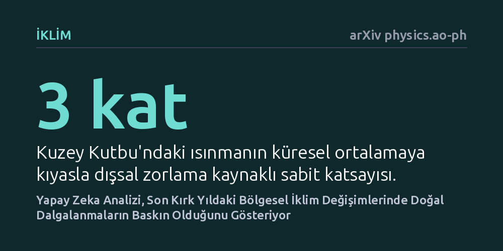

IKLIM · arXiv physics.ao-ph · 2026-10-22
Araştırmacılar, tarihsel iklim kayıtlarında insan kaynaklı etkiler ile doğal dalgalanmaları ayırt etmek için uzamsal-zamansal bir derin öğrenme modeli geliştirdi. Model, Pasifik'teki bölgesel ısınma ve Kuzey Kutbu'ndaki sıcaklık artışı gibi tartışmalı iklim eğilimlerinde doğal iç değişkenliğin belirleyici rol oynadığını ortaya koydu.
Gözlemlediğimiz her bölgesel iklim krizinin doğrudan insan faaliyetinden kaynaklanmadığını, gezegenin kendi doğal döngülerinin de mevcut eğilimleri güçlü biçimde yönlendirdiğini gösterir.

Küresel sıcaklıkların artışı tartışılmaz bir gerçek; ancak bölgesel düzeydeki hava olaylarına ve yağış rejimlerine baktığımızda tablo karmaşıklaşır. Bir bölgedeki kuraklık ya da okyanus suyu sıcaklığındaki ani bir değişim doğrudan sera gazı emisyonlarının mı sonucudur, yoksa iklim sisteminin on yıllar süren kendi doğal salınımının bir parçası mıdır? Tarihsel gözlemlerde bu iki etkinin birbirine dolanmış olması, iklim bilimcilerin en çok zorlandığı temel sorulardan biridir.
Bu ayrımı doğru yapamamak iki büyük risk doğurur: Ya insan kaynaklı etkinin boyutunu yanlış hesaplarız ya da iklim modellerimizin geleceğe dair bölgesel öngörülerine gereğinden fazla veya eksik güveniriz. İklim krizine karşı yerel uyum planları hazırlayan karar vericiler için hangi değişimin kalıcı bir insan etkisi, hangisinin ise geçici bir doğal dalgalanma olduğunu bilmek hayati önem taşır.
Araştırma ekibi bu zorlu kördüğümü çözmek için uzamsal ve zamansal örüntüleri aynı anda işleyebilen özel bir derin öğrenme mimarisine, "evrişimli uzun-kısa vadeli bellek" (ConvLSTM) ağına başvurdu. Model, farklı iklim araştırma merkezlerinin geliştirdiği çok sayıda küresel iklim modelinin simülasyonlarıyla eğitildi. Bu simülasyonlar, dış etkenlerin önceden bilindiği kontrollü sanal dünyalar sunduğu için yapay zeka ağının dışsal zorlamayı içsel gürültüden ayırma yeteneğini geliştirdi.
Geliştirilen yapay zeka yöntemi, mevcut istatistiksel modeller, klasik makine öğrenimi teknikleri ve geleneksel model tabanlı yaklaşımlarla karşılaştırıldığında tutarlı biçimde daha yüksek başarı gösterdi. Sınamaların ardından model, 1980'den günümüze uzanan gerçek dünya iklim gözlem kayıtlarına uygulandı.
Analiz sonuçları, özellikle bilim dünyasında kökeni tartışılan bazı bölgesel iklim olaylarına açıklık getiriyor. 1980 yılından bu yana Pasifik Okyanusu'nun ekvator kuşağında gözlemlenen La Niña benzeri ısınma kalıbında ve buna bağlı olarak Kuzey Amerika'nın güneybatısında yaşanan belirgin yağış azalışında, iklim sisteminin içsel değişkenliğinin baskın rol oynadığı görüldü.
Bununla birlikte model, Kuzey Kutbu'ndaki ısınmanın küresel ortalamanın yaklaşık üç katı hızda gerçekleştiği kutup güçlenmesi sürecinde, dışsal zorlamanın neredeyse sabit üç katlık bir temel oluşturduğunu, gözlemlenen dalgalanmaların ise iç değişkenlik tarafından modüle edildiğini saptadı. Atlantik Okyanusu'nda yarımküreler arası sıcaklık asimetrisinin tersine dönmesinde de doğal iç dinamiklerin dışsal etkiyi belirgin biçimde kuvvetlendirdiği anlaşıldı.
Elde edilen bulgular, yapay zekanın hesapladığı dışsal tepkiler ile mevcut fiziksel iklim modellerinin simülasyonları arasında genel bir uyum olduğunu, ancak kritik uyuşmazlıkların da bulunduğunu ortaya koyuyor. Mevcut iklim modelleri, Kuzey Yarımküre'de gerçekte gözlemlenenden daha kuvvetli bir ısınma öngörürken, subtropikal yüksek basınç kuşaklarındaki güçlenmeyi daha zayıf ve karasal yağışlardaki düşüşleri daha sınırlı tahmin ediyor.
Bu uyuşmazlıklar, mevcut modellerimizin bazı bölgesel atmosfer-okyanus geri besleme mekanizmalarını tam yansıtamadığına işaret ediyor. Derin öğrenme tabanlı bu yeni çerçeve, geçmiş iklim değişimlerini doğru nedenlere bağlamakla kalmıyor, aynı zamanda geleceğe ışık tutan iklim modellerinin güvenilirliğini denetlemek için bağımsız ve tarafsız bir ölçüt sunuyor.